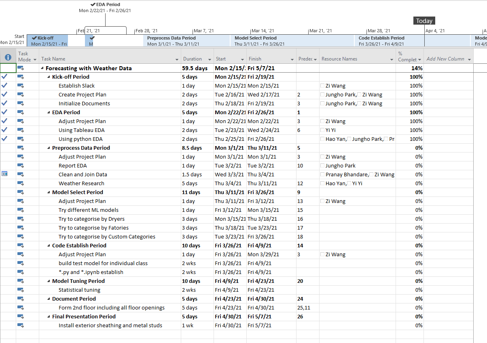

Stevens
Figure: Messange Sequence Kafka and Kinesis.
1. Summary
Stevens Data Cloud is a project combine hands-on data pipeline and course desgin. First part will use Citi-bike data to build a data pipline. Second part will guide you how to install different database and data tools on different platform.
2.Kafka Pipeline
This pipline is a multi input and multi output system. You can use different data source as your import. For the store and analysis part, you also have different options for differnt senario requirements.
- The most common data source is API, like this.Citi-bikey API. This is JSON file refreahed every 5 minutes. We can use requests() library to scrapy this kind of data.
- In order to consider private and public environment, we select open source Kafka and private (AMS owned) Kinesis as our data stream
- On default setting, Kafka is real-time message sequence but Kinesis is nealy real-time with 60 seconds buffer.
- Transformed json to dictionary format with 'station_id' and 'time_stamp'
- Called KafkaProducer on 9092 port and send data and signed 'station_id' as topic.
- Different consumer will serve different destition database and different senario data type requirements. So each consumer will correspond to each scenario
- Extract data from KafaConsumer with cassandra.cluster or mongoDB reader
3. Kinesis Firehouse Pipeline
- For Kinesis part, we use Kinesis-agent for python to drive pipline.
- Restore the JSON into target floder and use python to convert into Kinesis readable data format, each package seperate with whitespace.
- Create Kinesis Date Firehous stream on AWS and select desition on S3, Redshift or DocumentDB.
- Configure Kineis-agent to recognize AWS Kinese firehouse servies in same VPC.
- Default Kinsis stream will recive data from Kinesis-agent and upload to desition every 60 seconds.
4.

Figure: Microsfot Project Gantt.
- We have two teams that responsible for weather impact and schedule optimeze seperatelty.